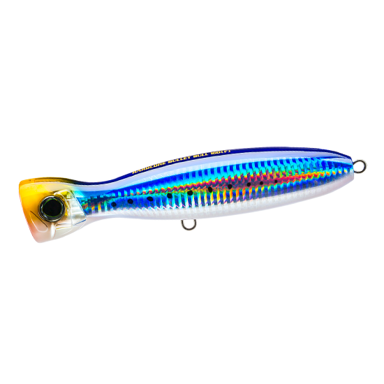
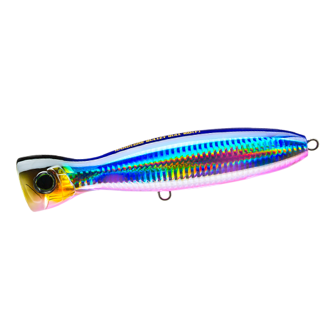
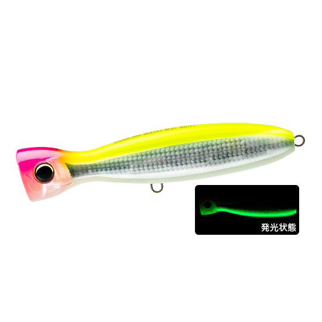
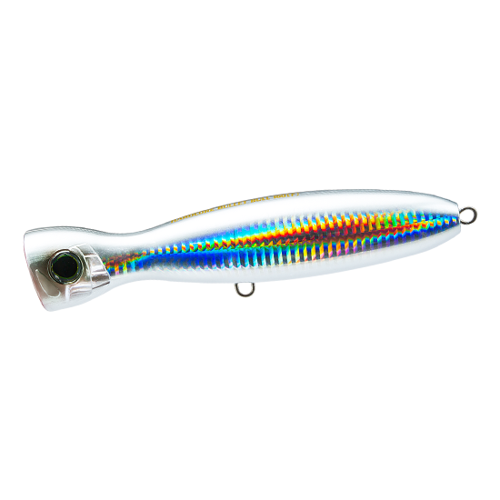

ハードコア バレットブル（F）130mm
（HARDCORE BULLET BULL（F）130mm）
ハードコア バレットブル（F）130mm（HARDCORE BULLET BULL（F）130mm）はDUEL（デュエル）の青物用ポッパーです。
次世代の重心移動システム「MAG BULLET（マグネットバレット ウェイトトランスファーシステム）」を搭載し、最大飛距離90mオーバーをうたう「ぶっ飛びポッパー」の130mmモデル。製品重量50gで投げやすく、初めてバレットブルを使う人にもすすめられているサイズです。

画像出典:DUEL公式HP
スペック
- メーカー
- DUEL（デュエル）
- タイプ
- ポッパー（フローティング）
- 全長
- 130mm
- 自重
- 50g
- フック
- #1/0
- リング
- #6（POWER）
- 飛距離
- MAX 90m
- 対応タックル
- PE2〜4号クラス
- カラー
- 全14色
- ターゲット
- 青物（ブリ・ヒラマサ）・シイラ・カツオなど
- 価格
- オープン価格
▼今すぐチェック

ハードコア バレットブル（F）130mmの特徴
沖のナブラまで届く飛距離と、短い距離で強く誘えるハイアピールを両立した青物用ポッパー
-
重心移動システム「MAG BULLET」で最大飛距離90mオーバー
キャスト時はウェイト球がばらけずに一つの塊として動き、強いインパクトで推進力を生む。スイム時は腹部の強力マグネットでウェイト球をしっかり固定するため、重心がぶれず安定したアクションを出せる。
-
水平姿勢でフッキング率アップ
水面で魚がルアーを認識しやすい水平姿勢で浮くよう設計され、フッキング率アップにつながる。水面に出た魚がルアーをしっかり捉えやすい姿勢だ。
-
大口径カップとボトルネック形状でショートピッチのハイアピール
大きく口を開けたカップとボトルネック形状が生む水流抵抗で、短い移動距離でもスプラッシュ・泡・ポップ音をしっかり出せる。ビッグフィッシュとのやり取りにも安心なワイヤースルー構造を採用している。
ハードコア バレットブル（F）130mmの使い方
基本はポッピング。ロッドをシャープにあおってカップで水をつかみ、スプラッシュとポップ音で広い範囲の青物に存在を気づかせる。ショートピッチでもしっかり水を押せるので、移動距離を抑えて同じ場所でアピールし続けられる。
ナブラが出たら、飛距離を活かしてナブラの少し先に投げ込み、連続ポッピングで群れの中を通すのが基本。反応がない時はポッピングの間にステイを入れ、食わせのタイミングを作りましょう。
ハードコア バレットブル（F）130mmの得意な状況
磯やサーフ、堤防から、沖で起きるナブラや潮目の青物を狙う状況が最大の出番。
ショアからのトップゲームで「あと少しで届かない」ナブラを射程に入れたい時や、一日中投げ続けるショアの回遊待ちで、疲れにくい重さのポッパーを使いたい場面で選びたい1本です。
ワンポイント
公式では、130mmはPE2〜4号クラスのタックルに合うサイズとされています。より大型の青物を狙う時や向かい風が強い時は、PE4〜6号クラス対応の160mmへ上げると飛距離と存在感を出しやすくなります。
ポッパーは水面が割れてもすぐに合わせず、ロッドに重みが乗ってから巻き合わせると掛かりやすいです。
バレットブルシリーズの使い分け
| モデル | 全長／自重 | 得意な場面 |
|---|---|---|
| 100mm | 100mm／30g | ベイトが小さい時の食わせサイズ・シーバスタックルでも使える |
| 130mm | 130mm／50g | PE2〜4号クラス・投げやすく初めての1本に（本記事のモデル） |
| 160mm | 160mm／80g | PE4〜6号クラス・シリーズのスタンダードで最長飛距離 |
| 190mm | 190mm／95g | PE6〜8号クラス・大型青物、GT、マグロ狙い |
バレットブルは100〜190mmの4サイズ展開。130mmは飛距離と操作性のバランスに優れ、食い渋る状況でもナチュラルにアプローチできるサイズとして、シリーズの入り口を担うモデルだ。
オススメカラー
ハードコア バレットブル（F）130mmは全14色展開。ショアの青物狙いでオススメのカラーを厳選して紹介します。

HIW イワシカラーローテーションの軸になる王道のブルー系ベイトカラー。拡散型ホログラムで広範囲にアピール。

HBPC ブルピンキャンディー外洋で強いブルー×ピンクにキャンディーカラーを融合。イワシ系でアピールが足りない時に。

HLCL グローベリーチャート夜光ベリーで存在をアピールするマズメのパイロットカラー。光量が少ない時間帯に強い。

HSF シルバーフラッシュ太陽光を乱反射するギラギラのフラッシング。日が昇りきった晴天の澄み潮で効果を発揮。
画像出典:DUEL公式HP
ハードコア バレットブル（F）130mmに似ているルアー
-
 フィードポッパー121
タックルハウス
詳細はこちら＞
フィードポッパー121
タックルハウス
詳細はこちら＞
全長121mm・自重30gのポッパー。ほぼ直立の浮き姿勢でピンスポットを集中的に誘えるので、近距離でじっくり粘りたい時に。
-
 ガチポップ100
ブルーブルー
詳細はこちら＞
ガチポップ100
ブルーブルー
詳細はこちら＞
全長100mm・自重26gの青物用ポッパー。小さめのシルエットで見せたい時や、ライトなタックルで青物のトップを楽しみたい時に。
-
 ポップクイーンF105
マリア
詳細はこちら＞
ポップクイーンF105
マリア
詳細はこちら＞
全長105mm・自重25gのソルト用ポッパー。ベイトが小さい時や、シーバスタックルで青物のナブラを狙いたい時に。